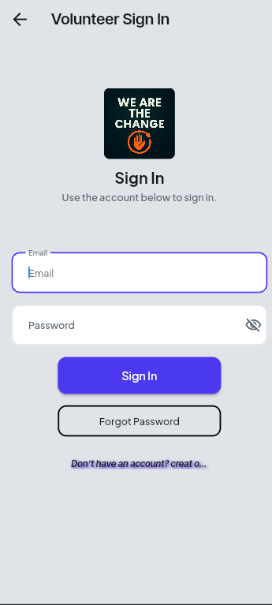
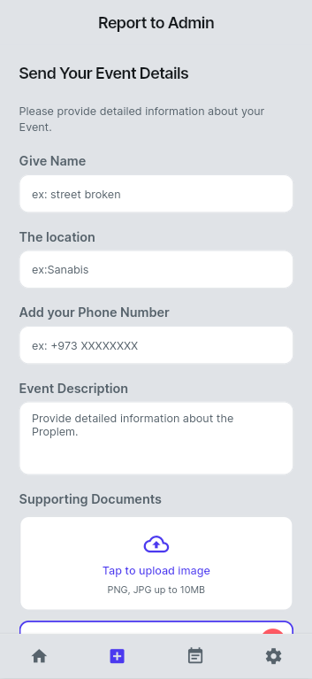
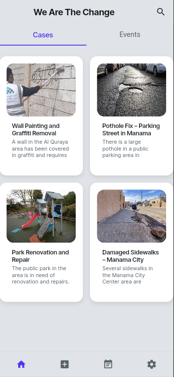
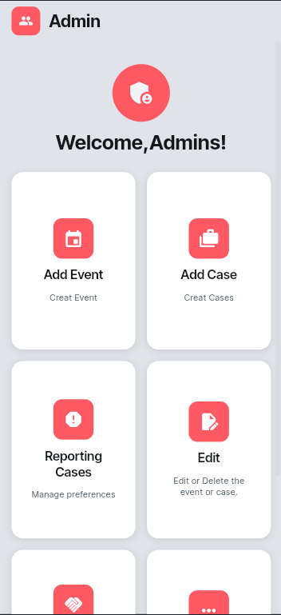

Secure Civic Engagement Platform – Senior Project
"We Are The Change" is a secure mobile civic engagement platform that enables Bahraini residents to report local community issues and participate in volunteer activities. The system is built with FlutterFlow for the frontend and Firebase for authentication and data management.
This project presents the design and development of "We Are The Change," a civic engagement platform that enables citizens to report local issues and participate in community volunteering through a mobile application. Addressing the problem of inefficient public issue reporting and limited citizen engagement, the system allows users to submit reports with photos and sign up for volunteer activities managed by administrators. The project involved system analysis, security requirements engineering, application of threat modeling methodologies, and the implementation of secure user authentication and data handling with Firebase. Testing demonstrated reliable performance, robust data protection, and smooth user experience across devices. Results show the platform effectively streamlines issue reporting, supports secure data management, and encourages greater community participation, confirming the solution's practical value and scalability.




ID: 202102256
Email: abdulla@example.com
ID: 202102620
Email: hussain@example.com
ID: 202102525
Email: salman@example.com
University: University of Bahrain – College of Information Technology
Project Team: Abdulla Khamis · Hussain Sahwan · Salman Altal
Emails: abdulla@example.com · hussain@example.com · salman@example.com